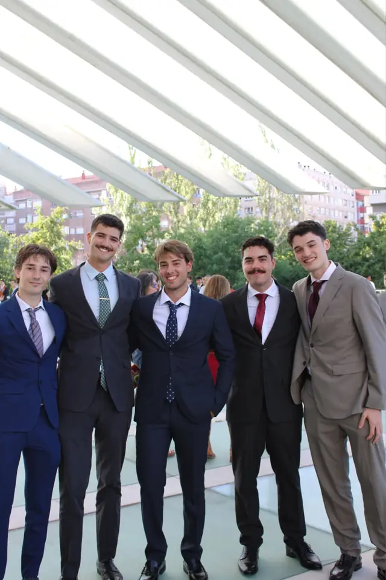
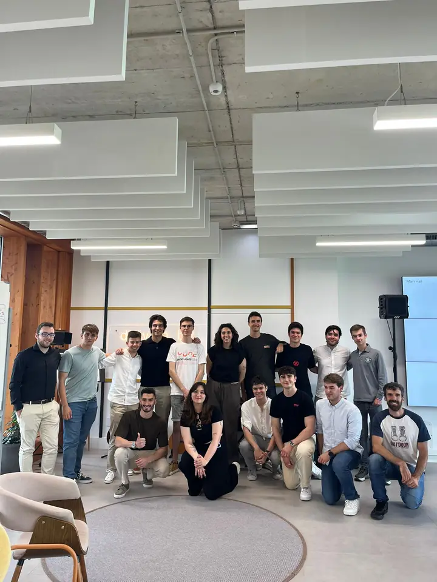
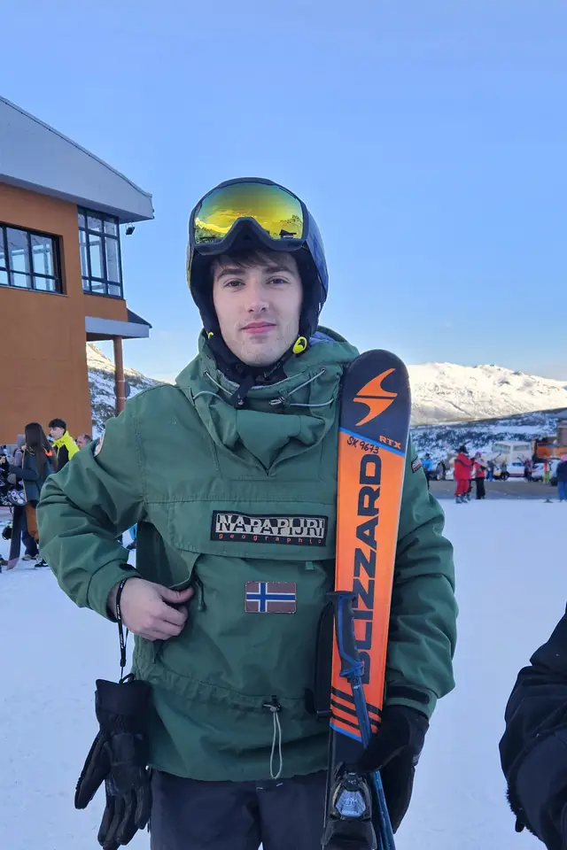
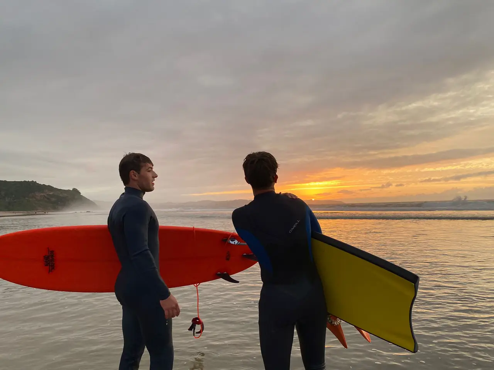

Sobre mí
Mi historia

Soy graduado en Ingeniería Informática del Software por la Universidad de Oviedo (2022–2026) y desde septiembre de 2026 curso el Máster Universitario en Ingeniería Web. Mi experiencia se centra en sistemas backend y microservicios: hice prácticas en NTT Data de febrero a abril de 2026, trabajando con microservicios Java, Spring y Kafka, y las he retomado con el máster.
Ahora estoy profundizando en la ingeniería de ML, los pipelines de datos y la IA aplicada. Me gusta entender los sistemas desde primeros principios.
Actualmente
- De prácticas en NTT Data (octubre de 2026 – febrero de 2027), en la migración de los microservicios de un cliente del sector retail.
- Cursando el Máster Universitario en Ingeniería Web en la Universidad de Oviedo.
- Construyendo BasaltDB, un motor de base de datos relacional en Rust.
- Profundizando en ML con el libro Hands-On Machine Learning with Scikit-Learn and PyTorch.
- Abierto a roles de Software Engineering / Data Engineering / DevOps / MLOps / ML Engineering.
Intereses y aficiones

Intereses profesionales
- Machine Learning, ingeniería de datos e IA aplicada.
- Ingeniería del software.
- Participar en proyectos colaborativos multidisciplinares.
Fuera del trabajo
- Deporte: surf en verano en las playas del concejo de Ribadesella, esquí en invierno, gimnasio y, cuando puedo, escalada en rocódromo y piragüismo.
- Viajes: he recorrido sobre todo Europa (algunos de esos lugares están en la Galería) y me gustaría conocer otros continentes, como Australia o Latinoamérica.
- Música: cambio de estilo según la semana, pero últimamente escucho sobre todo rock español y estadounidense, indie rock español y rap, principalmente estadounidense.
- Lectura: fantasía de Brandon Sanderson y novela negra de Carmen Mola.

